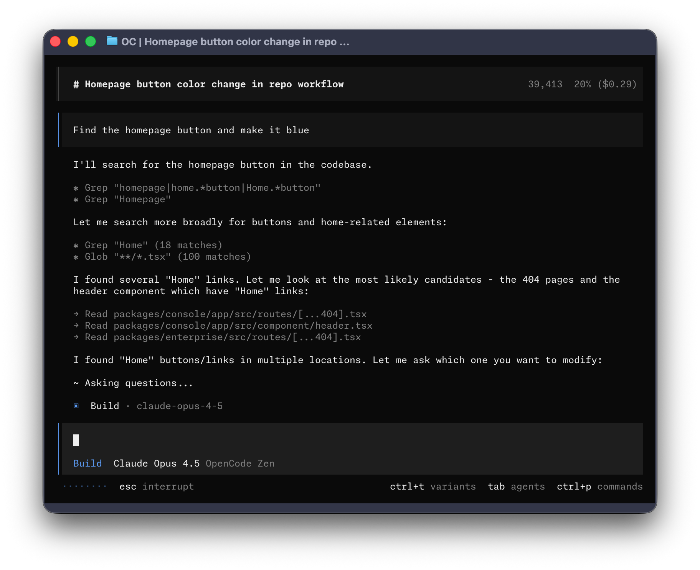

Агент, который не считает числа сам
Коллектор статистики успеваемости: языковая модель понимает запрос и оформляет отчёт, а средний балл, пропуски и группу риска считает отдельный инструмент — локальный MCP-сервер. Расчёты можно проверить вручную.
Нужны: Node.js LTS, OpenCode (пакет opencode-ai, как в практике 3.4), доступ к выбранной модели. Все данные синтетические.
student_idstat-collectorAGENTS.md запрещает модели считать самойoutputs/report.md для куратораГотовый учебный MCP-проект
Если хотите начать с работающего примера или использовать резерв, скачайте проект. В архиве синтетическая ведомость, сервер на Python 3 и проверка расчётов; дополнительные библиотеки не требуются.
Распакуйте архив, откройте папку opencode-stat-collector в терминале и выполните:
python3 test_collector.py opencode mcp list
В OpenCode 1 ожидается stat-collector connected. Затем попросите агента вызвать analyze_group_stats. В Windows может потребоваться заменить python3 на py -3 в командах и в opencode.json. Сервер резервного проекта читает только учебный файл, а уровни риска в нём уже добавлены. Следующий сценарий на странице показывает создание и доработку своего инструмента с нуля.
Подготовьте проект
Терминал:
node --version npm --version opencode --version opencode mcp list
Маршрут занятия — OpenCode 1, пакет opencode-ai. Актуальные команды установки — на opencode.ai/docs; сверяйте с установленной версией.
mkdir -p opencode-stat-collector/data opencode-stat-collector/mcp/stat-collector opencode-stat-collector/outputs cd opencode-stat-collector
data/ — обезличенные таблицы, mcp/stat-collector/ — локальный MCP-сервер, outputs/ — отчёты.
Он пригодится, если генерация задержится, и для ручной проверки расчётов. Контрольные числа — в разделе «Сверка».
student_id: без ФИО, телефонов, адресов и медицинских сведений. Если работаете с настоящей таблицей колледжа — обезличьте её до того, как файл попадёт в агента. Облачная модель может получать содержимое файлов.Создайте учебные данные
Запустите OpenCode в корне проекта и попросите создать CSV. Не скачивайте готовую таблицу: модель должна сама собрать маленький набор, который вы потом проверите глазами.
Создай учебный обезличенный CSV-файл data/group_stats.csv для практики по коллектору статистики. Требования: - 12 студентов группы ИС-31; - вместо ФИО используй student_id: S001, S002 и так далее; - колонки: - student_id - group - avg_grade - failed_subjects - absences_total - absences_unexcused - assignments_missing - данные синтетические, без ФИО, телефонов, адресов и других персональных данных; - добавь несколько студентов с риском: низкий средний балл, задолженности, много пропусков; - один студент должен иметь средний балл ровно 3.5, чтобы проверить границу порога. После создания файла кратко объясни, какие колонки в нём есть.
Если модель показала таблицу в чате, но файл не создала:
Не просто покажи таблицу. Создай файл data/group_stats.csv в проекте.
12 строк; в первой колонке только student_id; все числовые поля — числа; есть студенты с долгами и пропусками; нет ФИО, телефонов и адресов.
Задайте правила проекта
Файл AGENTS.md описывает поведение агента в этой папке. Чисел он не считает — он требует, чтобы считал инструмент.
Создай AGENTS.md для проекта "Коллектор статистики". Требования: - агент помогает куратору анализировать обезличенную таблицу успеваемости и посещаемости; - агент не должен считать показатели сам языковой моделью; - для расчётов агент должен использовать MCP-инструмент stat-collector / analyze_group_stats; - агент может объяснять результат и оформлять отчёт; - агент не должен запрашивать ФИО, телефоны, адреса, медицинские сведения и другие персональные данные; - если пользователь даёт реальные персональные данные, агент должен попросить обезличить таблицу; - группа риска определяется правилами: - avg_grade < 3.5; - или failed_subjects > 0; - или absences_unexcused >= 6; - или assignments_missing >= 3; - итоговый отчёт должен включать: сводку по группе, список группы риска, причины риска, рекомендации куратору.
Запрет счёта моделью; требование вызвать MCP перед отчётом; правила обезличивания; критерии риска совпадают с колонками CSV.
Создайте MCP-сервер
Локальный сервер читает CSV, считает показатели и возвращает структурированный результат. Он никуда ничего не отправляет.
Создай локальный MCP-сервер mcp/stat-collector. Задача MCP: - предоставить инструмент analyze_group_stats; - инструмент принимает путь к CSV-файлу, например data/group_stats.csv; - инструмент читает CSV; - считает: - количество студентов; - средний avg_grade по группе; - суммарные absences_total; - суммарные absences_unexcused; - количество студентов с failed_subjects > 0; - список студентов группы риска; - группа риска определяется так: - avg_grade < 3.5; - или failed_subjects > 0; - или absences_unexcused >= 6; - или assignments_missing >= 3; - для каждого студента группы риска вернуть student_id и причины риска; - результат вернуть как JSON и короткую markdown-сводку; - не отправлять данные во внешние API; - структуру SDK выбери сам: подойдёт и старый стиль с константами ListToolsRequestSchema и CallToolRequestSchema, и новый со строками "tools/list" и "tools/call". Главное — рабочий запуск и инструмент с именем analyze_group_stats. Также создай или обнови opencode.json, чтобы OpenCode подключал этот локальный MCP-сервер. Важно для opencode.json: - используй ключ "mcp", а не "mcpServers"; - для локального сервера укажи "type": "local"; - "command" должен быть массивом, например ["node", "./mcp/stat-collector/index.js"]; - не используй поля args, env, disabled, autoApprove — они относятся к формату других MCP-клиентов; - добавь "$schema": "https://opencode.ai/config.json"; - не добавляй настройки моделей и провайдеров в этот файл: в этой практике opencode.json нужен только для подключения MCP. Сначала объясни план, затем создай файлы.
Если модель показала код, а файлы не создала:
Не просто покажи код. Создай файлы MCP-сервера в mcp/stat-collector и обнови opencode.json.

Как устроен сервер внутри
Имя инструмента analyze_group_stats объявляется в списке инструментов отдельно, а логика чтения CSV и расчёта лежит в обработчике вызова. Старые примеры SDK используют константы ListToolsRequestSchema и CallToolRequestSchema, новые — строки tools/list и tools/call. Обе структуры нормальны. Файл может называться index.js, server.js или server.mjs — главное, чтобы команда запуска в opencode.json указывала на фактический файл.
Правильный и неправильный opencode.json
Формат других MCP-клиентов OpenCode не принимает:
{
"mcpServers": {
"stat-collector": {
"command": "node",
"args": ["./mcp/stat-collector/index.js"]
}
}
}Такой файл вызывает ошибку Unrecognized key: mcpServers. Правильный формат OpenCode:
{
"$schema": "https://opencode.ai/config.json",
"mcp": {
"stat-collector": {
"type": "local",
"command": ["node", "./mcp/stat-collector/index.js"],
"enabled": true
}
}
}Моделей и провайдеров в этом файле нет: модель уже выбрана в настройках OpenCode, а конфигурация проекта добавляет только MCP-сервер.
Верхний ключ mcp; "type": "local"; "command" массивом; команда указывает на созданный файл; инструмент не отправляет данные во внешние API и читает только указанный CSV.
Проверьте подключение
opencode mcp list
В списке должен появиться stat-collector. Если сервер не виден или не запускается, не чините вручную — попросите агента диагностировать:
Проверь подключение MCP stat-collector. Посмотри opencode.json, команду запуска MCP и ошибки. Исправь минимально необходимое.
mcpServers или поле args вместо массива command. Рабочий цикл выглядит так: агент создал инструмент, вы проверили подключение, увидели ошибку, попросили агента исправить.Попросите агента проанализировать ведомость
Перезапустите OpenCode в корне проекта, чтобы он подхватил opencode.json, затем:
Проанализируй data/group_stats.csv. Используй MCP-инструмент stat-collector / analyze_group_stats. Сформируй отчёт для куратора: - сводка по группе; - средний балл; - пропуски всего; - неуважительные пропуски; - сколько студентов с задолженностями; - список группы риска с причинами; - 3 практических действия для куратора. Не считай показатели сам. Сначала вызови инструмент. Сохрани отчёт в outputs/report.md.
В журнале виден вызов инструмента; агент получает JSON и сводку; отчёт оформлен понятным языком; студентов и числа агент не выдумывает; ФИО не запрашивает.
Сверьте расчёты вручную
Откройте CSV рядом с отчётом и пересчитайте показатели на глазах. Для эталонного CSV контрольные числа такие:
12 студентов; сумма avg_grade 45,6 — средний балл 3,8; пропусков 71, из них неуважительных 37; с задолженностями 3 студента (S003, S009, S012).
S003 (балл и задолженность), S004 (7 неуважительных), S006 (4 несданных), S009 (все четыре условия), S010 (8 неуважительных), S012 (балл, задолженность, несданные).
У S006 средний балл ровно 3,5. Порог «ниже 3,5» его не задевает — задевают 4 несданных задания.
Если числа в отчёте расходятся с вашим подсчётом:
Проверь отчёт на соответствие CSV. Не пересчитывай языковой моделью. Снова вызови MCP-инструмент analyze_group_stats и сравни результат с отчётом. Если есть расхождения, исправь отчёт.
Доработайте инструмент
Порог риска живёт в коде инструмента, а не в промпте: там его можно проверить. Добавьте уровень риска:
Доработай MCP-инструмент analyze_group_stats: добавь поле risk_level со значениями low, medium, high. High ставь, если у студента два или более условий риска одновременно. Верни risk_level в JSON и в сводке для каждого студента группы риска.
До запуска спрогнозируйте: high получат S003, S009 и S012 (у каждого два и более условий), остальные из группы риска — medium. Затем вызовите инструмент заново и сравните.
Второй вариант доработки — порог неуважительных пропусков, который куратор сможет менять при вызове:
Доработай MCP-инструмент analyze_group_stats: добавь параметр min_unexcused_absences, чтобы куратор мог менять порог неуважительных пропусков. По умолчанию 6. Параметр должен влиять только на условие absences_unexcused >= порог.
Итог: цепочка файлов
Проект целиком:
opencode-stat-collector/
AGENTS.md правила поведения агента
data/
group_stats.csv обезличенные учебные данные
mcp/
stat-collector/ локальный MCP-сервер с инструментом analyze_group_stats
outputs/
report.md отчёт для куратора
opencode.json подключение MCP к OpenCodeБез MCP это был бы разговорный помощник, который рискует ошибиться в числах. С MCP это интерфейс к проверяемому расчётному инструменту: модель понимает запрос и оформляет результат, считать она не должна.
Что менять при смене источника
Если источником станет Google Sheets или Excel, заменяется только чтение данных в инструменте. Правила в AGENTS.md и конфигурация остаются прежними.
Если отчёт нужен ежемесячно
Инструмент можно вызывать по расписанию, а отчёты складывать в outputs/ с датами. Это уже отдельная настройка запуска, а не новая просьба модели.